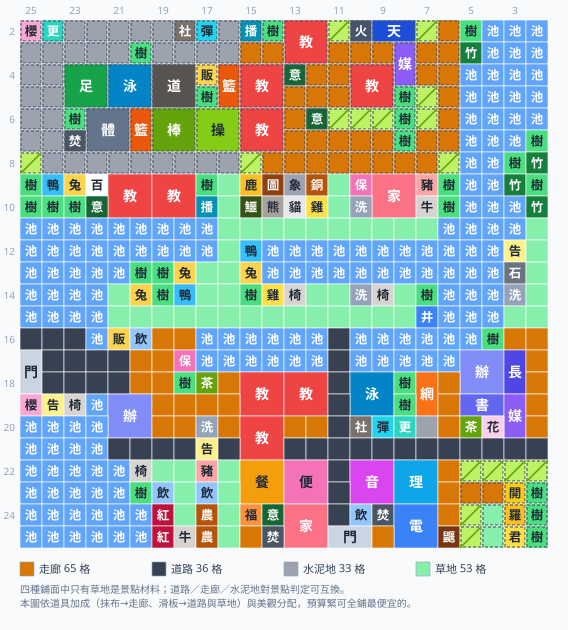

口袋學院物語2 湖岸小鎮完美佈局
第三張地圖「湖岸小鎮」（24×24）的完美佈局，2026 年 8 月依「分區優先」原則整張重做，並在同月補上「滿編校舍」這條硬指標：先劃出語意清楚、成塊的分區（高原運動公園／高原教學棟／北岸教學棟／舊校舍／南商業街／行政學術翼…），再用對應材質的通路把它們接起來。本圖的成績是教室 9 間（1–3 年級各 3 班，遊戲滿編）＋辦公室 2 間（遊戲上限）全部就位、人氣景點 23 個、95 棟建築每一棟都走得到、146 格湖面一格不鑿、47 格原始斜坡全部保留，而且「看起來能走其實走不到」的格子是 0。多蓋 8 間教室（32 格）不會讓任何一個景點消失——因為那 32 格全部是從不是景點材料的東西身上要來的（高原動物園、北岸的農舍、舊校舍的小機能室），詳見教室那一節。放棄的 6 個景點與各自的理由寫在景點那一節，不藏。這是五張圖裡最小、水最多的一張——576 格裡四分之一是水，陸地只剩 430 格，還被切成北高地、北岸半島、南校區三塊，彼此只靠三個渡口相連；所以它的主題從頭到尾都是動線經營。可以點下面的按鈕直接載入佈局模擬器。

看法與另外幾張相同：格子上的字是設施簡稱，一棟多格建築畫成一個大方塊，虛線深色外框是高地（高地空地填成暖灰），帶斜線的黃綠色是斜坡。四種鋪面（道路／走廊／水泥地／草地）刻意不逐格標字，改看圖下方的鋪面圖例（色塊＋格數）。邊緣數字是遊戲內座標（上方 Y、左側 X）。這張圖請先看三個地方：高地西半是把運動園區整組搬上去的高原運動公園（水泥地步道）、高地東半 Y15–Y12 是高原教學棟（三間教室＋走廊，很多佈局在這裡放動物園），以及 X16 / Y19–Y18 那兩格——南北唯一的天然通道。九間教室分散在四棟：高原教學棟 3、舊校舍 2＋原生 1、北岸教學棟 2、高原觀星棟 1。
為什麼是 23 不是 29：分區優先，景點數是結果
你會看到不少湖岸小鎮佈局寫著「29 / 29 全成立」。本圖刻意不那樣做，有兩個原因：
- 設施尺寸。操場／棒球場／足球場／體育館／道場／游泳池，以及電腦室／理科室／音樂室／美術室／家政室／多功能室全部都是 2×2（天象館是橫 2 格）。把它們當 1×1 排，等於憑空多用了幾十格；那種圖上會有二十幾座建築鋪不滿自己的地基，實機蓋不出來。29/29 有很大一部分是這樣「湊」出來的。
- 設計原則採分區優先。以湊滿 29 為目標的排法，鋪面是事後補上的視覺語意，於是產出「農牧園區裡站著校長室與操場」的圖。本圖的原則是先劃成塊的分區 → 再用材質對應的通路連起來 → 景點數降級為「良好分區前提下的最大可成立數」；三步的完整說明與路網品質怎麼量寫在佈局範例集的通用設計原則，本頁只講湖岸小鎮特有的取捨與數字。
湖岸是五張圖裡受這兩件事衝擊最大的一張，因為2×2 的位置在這裡是最稀缺的資源：南校區（X17–X25）扣掉原生校舍、原生走廊與水面，整片只排得下 11 座 2×2；北岸帶那兩列平地被 8 株樹打斷，幾乎排不出一座 2×2。所以要嘛把專科教室拆散、塞進農牧區與運動區把分區名變成謊話，要嘛誠實放棄幾個景點。本圖選後者：23 個成立、6 個放棄（藝術／家庭／時尚／燒水／澀谷／名門，逐個理由見景點一節）。
滿編校舍：9 間教室怎麼塞進全五鎮最擠的一張圖
校舍規模是一條硬指標：遊戲裡 1～3 年級各可開 3 個班，教室固定 9 間；辦公室上限 2 間。兩者都是 2×2，加起來 44 格，而且兩者都不是任何人氣景點的材料——正因為不是材料，排景點時它們永遠第一個被擠掉。湖岸在這件事上是五鎮裡最吃緊的：不刻意卡位的話，全圖會只剩原生那一間教室（辦公室倒是天生就有 2 間）。所以這張圖要解的題是：再擠出 8 間教室 ＝ 32 格，而全圖陸地只有 430 格、南校區只排得下 11 座 2×2。
結果是 8 間全部找到，而且 23 個景點一個都沒少。關鍵不是「找空地」，而是只從「不是景點材料」的東西身上要地——景點材料一格都不動，景點自然一個都不掉。四塊地的來源與代價：
| 新教室 | 位置 | 那塊地原本是什麼 | 代價 |
|---|---|---|---|
| 高原教學棟 ×3 | X2–X3/Y13–Y12、X4–X5/Y15–Y14、X6–X7/Y15–Y14 | 高原動物園（長頸鹿／大象／圖騰柱／銅像＋鱷魚熊貓無尾熊，10 棟 1×1）。這是北高地上除了運動公園之外唯一還排得下 2×2 的整塊高地，24 格裡只有三株樹墩擋著，剛好切成三個 2×2 口袋 | 0 個景點：長頸鹿＋圖騰柱＋大象＋銅像四件整組搬到北岸動物園的 X9/Y15–Y12 一字排開，青空與非洲在新窗口原地重生；鱷魚、熊貓跟著下山。少了 3–4 棟 1×1 的棟數 |
| 舊校舍・教室棟 ×2 | X18–X19/Y15–Y14、X18–X19/Y13–Y12 | 進路室／遊戲區／廣播室三棟 1×1，加 X19 那條原生長廊的東半段 | 0 個景點：三棟都不是景點材料（廣播室在高原教學棟重建）。真正的代價是動線——見下面那段紅字 |
| 北岸教學棟 ×2 | X9–X10/Y21–Y20、X9–X10/Y19–Y18 | 北岸農牧帶西段（X9–X10/Y21–Y18）的豬／牛／雞／小農場 | 0 個景點：「菜園」（草地＋小農場＋飲水處）本來在這裡成立，但南農牧帶的原生草地＋小農場＋飲水處本來就湊得出同一個景點，窗口從 X7/Y20 換到 X7/Y10 就好。少了 4 棟農舍 |
| 高原觀星棟 ×1 | X4–X5/Y10–Y9 | 次高台上兩株原生樹林（X4/Y9、X5/Y10）＋兩格空地 | 0 個景點：宇宙火箭＋天象館＋多媒體教室仍在同一個 4×4 窗口，宇宙不受影響。而且順手解掉了這一區的分區語意矛盾——見下 |
湖岸小鎮的地形：最小的一張圖，四分之一是水
湖岸小鎮是 24×24 格（座標 X2–X25 / Y2–Y25），是五張圖裡唯一小於 26 格的一張。576 格裡：
| 地形 | 格數 | 位置 |
|---|---|---|
| 水面 | 146 | 西大湖（X11–X15 西半＋X20–X25 西南）、山中湖兩片（共 29 格：X12–X13/Y14–Y6、X16–X17/Y10–Y6）、東北角湖（X2–X8/Y4–Y2） |
| 平地（elev 1） | 258 | 北岸帶 X9–X10、中央半島 X11–X15、校區帶 X16–X21、南部帶 X22–X25 |
| 高地 1 層（elev 2） | 130 | 北高地大高原 X2–X8（全圖最大一塊，運動公園與教學棟都在上面）＋東南高台 X22–X25/Y5–Y2 |
| 高地 2 層（elev 3） | 42 | 北高地裡的次高台 X2–X6/Y11–Y7（本圖的高原觀星棟）＋散佈的在意之樹／樹林墩 |
陸地 430 格是五張圖裡偏少的一側，但「地不夠」不是這張圖的難點——難點是連通性。西大湖從 X11 一路延伸到 X15，加上 X16 幾乎整列都是水，把地圖切成三塊，彼此只有三個渡口：
- 鎖喉走廊 X16/Y19–Y18：X16 那一列的 Y21–Y18 四格是南北之間唯一的陸橋，其中 Y21 是原生販賣機、Y20 是原生飲水處，真正能走的只有 Y19、Y18 兩格。
- X16 / Y11 渡口：X16 那一列在 Y11 有一格陸地（兩側 Y12、Y10 都是水），是第二條南北通道。旁邊 X15/Y11 原本有一株樹擋住入口，清掉就順了。
- 東岸步道 X16/Y4–Y2：東岸那條兩格寬的長條，南下接行政學術翼的 Y2 走廊。
| 健康鎮 | 冬郵小鎮 | 湖岸小鎮（本圖） | |
|---|---|---|---|
| 地圖尺寸 | 26×24 | 26×26 | 24×24（最小；座標 X2–X25 / Y2–Y25） |
| 校門位置 | 左側（直式 1×2） | 上緣（橫式 2×1） | 左側 X17–X18/Y25（既有，直式）＋南緣 X25/Y11–Y10（自己開，橫式） |
| 水塘／湖面 | 34 格 | 76 格，圍出湖心地 | 146 格（全圖 25%），一格不鑿 |
| 高地 | 南北兩塊，邊界自然生成斜坡 | 161 格，鋪滿草地竹林、沒有斜坡 | 172 格；北高地南緣 X8 幾乎整列都是原生斜坡，天生就走得上去——本圖把運動園區搬上去就是靠這一列 |
| 南北連通 | 全圖一大塊 | 東南湖心地要鑿水道 | 三個渡口（鎖喉走廊兩格＋X16/Y11＋東岸步道） |
| 初始設施 | 少數舊校舍 | 右上角一群 | 校門／辦公室／教室／游泳池（2×2）／洗手間／公告欄／販賣機／飲水處／水井／焚化爐／飼育鱷魚＋原生農牧帶（草地×4／養雞／小農場×2／映山紅×2） |
| 路網座標 | X7 / X12 / X17 / X22 ＋ Y21 / Y16 / Y11 / Y6 | X6 / X11 / X16 / X21 / X26 ＋ Y23 / Y18 / Y13 / Y8 / Y3 | X11 / X16 / X21 ＋ Y21 / Y16 / Y11 / Y6 |
| 幹道脊椎（鋪道路） | X17 ＋ Y11 / Y16 | X16 的 Y16–Y6 段 ＋ Y6 / Y16 兩段 | X21 的 Y21–Y2 段（南幹道）＋ Y11 的 X17–X25 段（南門縱脊）——段式宣告，X16 被湖切成三段所以刻意不當脊椎，X16/Y11 渡口也留給分區材質 |
| 鋪面配比 | 走廊 101／道路 84／草地 75／水泥地 14（走廊 37%） | 草地 92／走廊 59／道路 55／水泥地 24（走廊 26%） | 草地 55／走廊 43／道路 36／水泥地 20（走廊 28%；總格數 154，是五張裡最少的） |
| 景點／棟數 | 29 / 29 · 148 棟 | 29 / 29 · 144 棟 | 23 / 29 · 95 棟（陸地最少、2×2 位置最少） |
| 教室／辦公室 | 9 / 2 | 9 / 2 | 9 / 2——兩者都是硬指標（1–3 年級各 3 班＋辦公室上限），本圖拆成四棟教學區才塞得下，見教室一節 |
湖岸小鎮特有的五件事
- 鎖喉走廊 X16/Y19–Y18：北半部所有景點的動線全靠這兩格。從西門走進來，往北的唯一路徑是「舊校舍走廊 X17/Y19 → X16/Y19 → 中央半島 X15/Y19」。X16 剛好是路網的橫向大道，所以那兩格自己會被鋪成路；真正危險的是北側銜接的 X15/Y19–Y18–Y17 與往北接上去的 X14/Y17、X13/Y17——它們落在中央半島的街廓裡，本圖整條手鋪成通路釘死，任何建設都不准佔用。不釘的話填充會把農舍蓋上去，北半部一次全斷（實測 5 棟同時變走不到）。
- 一格橡皮擦打開被樹擋住的水井口袋。這是「不鑿一格湖」還能維持動線的關鍵。X15/Y11 原本站著一株樹，緊鄰 X16/Y11——那格是 X16 那一列在 Y11 唯一的陸地（兩側 Y12、Y10 都是水），本來就是南北之間的第二條通道，只是入口被樹擋住。把樹清掉換到三件事：打通「水井口袋」（X14–X15/Y11–Y7 七格空地＋原生水井 X15/Y7，那口井從開局就是走不到的建築）、多開第二條南北通道、外加水岸＋力量兩個景點的窗口。
- ★ 本圖最關鍵的一步：把運動園區搬上北高地。操場／棒球場／足球場／體育館／道場／游泳池全是 2×2，南校區排不出那麼多；而北高地有 80 格以上連續的高地空地，南緣 X8 又幾乎整列都是原生斜坡（天生走得上去）。所以本圖把足球場＋體育館＋游泳池②排在 X4–X7 / Y23–Y20 同一個窗口成立熱血，旁邊再放操場／棒球場／道場／籃球場×2／社團教室／彈跳床，一個分區一次撐起熱血、熱情、運動、動作、黃昏五個景點，而且完全不佔用南校區的 2×2 額度。X8 那一整列斜坡順便就是它的看台階梯——黃昏（棒球場＋斜坡＋樹林）因此免費成立。高地一樣可以蓋房，只有斜坡不能蓋；本圖在高原上自己鋪了一副「Y24 縱走道＋X3 橫走道」的水泥步道骨架，因為高地開發的預設規則（每列只留最外側兩格當步道）碰到手放的 2×2 會生出上下不相通的口袋——不補這道骨架，體育館就會變成走不到。
- 原生游泳池是 2×2，佔 X18–X19 / Y10–Y9。它把「泳池運動區」那個街廓的可用格砍到只剩一座 2×2 的位置，這也是體育館與足球場只能上高原的直接原因。本圖那個街廓改放網球場（1×2）＋社團教室＋彈跳床，網球場的位置是刻意的：它跟行政學術翼的圖書室同框成立約會。
- 原生鱷魚池 X9/Y2 被湖圈死，只能拆遷。四鄰是東北角湖與竹林，附近唯一的兩格空地（X7/Y2 與 X8/Y3）彼此還是斜角、互不相鄰，也全被湖包住——從開局第一天就是「走不到的建築」，而本圖不鑿湖，唯一的解是拆遷。鱷魚不是任何景點的材料，本圖把它連同熊貓在北岸動物園（X10/Y15）重建，零風險。這是全圖唯一一棟拆遷。（動物全部集中在北岸——長頸鹿、大象、圖騰柱、銅像都在山下這一區；北高地那塊地本圖拿去蓋高原教學棟了。）
分區規劃：先分區，再用對應鋪面連接
骨架仍是棋盤路網＋4×4 街廓（大道 X11 / X16 / X21，街道 Y21 / Y16 / Y11 / Y6），5×5 共 25 個街廓，每一個都宣告了名稱＋鋪面＋開發階段。下面按鋪面分組——因為在這張圖裡，鋪面就是分區語意（走廊＝室內、水泥地＝戶外運動、草地＝農牧／公園／水岸、道路＝對外）。分區名跟下面「階段 × 分區」那張表是同一套。
水泥地：運動分區
- 高原運動公園（X2–X7 / Y25–Y16）· 水泥步道 · 第 3 階段這一區是本圖的主角。北高地西半那一大片高地空地上排了六座 2×2 ＋ 兩座 1×2：足球場（X4–X5/Y23–Y22）、游泳池②（X4–X5/Y21–Y20）、體育館（X6–X7/Y22–Y21）、道場（X4–X5/Y19–Y18）、棒球場（X6–X7/Y19–Y18）、操場（X6–X7/Y17–Y16）、籃球場（X6–X7/Y20 與 X4–X5/Y16）、再加焚化爐（X7/Y23）、社團教室（X2/Y18）、彈跳床（X2/Y17）、販賣機（X4/Y17）。一個分區撐起熱血（足球場＋體育館＋游泳池）、熱情（足球場＋籃球場＋焚化爐）、運動（操場＋籃球場＋販賣機）、動作（道場＋社團教室＋彈跳床）、黃昏（棒球場＋斜坡＋樹林）五個景點。工程要點：先鋪「Y24 縱走道（X3–X7）＋ X3 橫走道（Y24–Y16）」這副水泥步道骨架，再放 2×2。X8 那一整列原生斜坡是南面的門面兼看台，一格都不要鋪（它是黃昏唯一的 slope 材料）；X2/Y22、X3/Y20 那兩株原生在意之樹卡在高地 2 層，2×2 不能跨高度，排列要繞開它們。
- 泳池運動區（X17–X20 / Y10–Y7）· 水泥地 · 第 4 階段原生游泳池 2×2（X18–X19/Y10–Y9）所在的街廓。16 格裡 4 格是泳池、4 格是山中湖水面，只排得下一座 2×2，本圖放網球場（1×2，X18–X19/Y7）＋社團教室＋彈跳床＋更衣室。全圖只有這一座網球場：X18–X19/Y8 那一豎四鄰是泳池、網球場與 X20 那一排建築，一個門都開不出來，所以留成綠地。網球場那一豎是刻意的：它與行政學術翼的圖書室、原生樹林（X20/Y7）同框成立約會。這是全圖唯一被迫與主運動區分開的運動分區——原生泳池不能搬，而它正好卡在南校區中間。
🟩 草地：農牧・公園・水岸分區
- 北岸動物園（X9–X10 / Y15–Y12）· 草徑 · 第 2 階段全圖的動物都集中在這裡（山上那塊地本圖拿去蓋高原教學棟）。長頸鹿（X9/Y15）＋圖騰柱（X9/Y14）＋大象（X9/Y13）＋銅像（X9/Y12）沿 X9 一字排開，一個窗口雙發青空與非洲；拆遷的鱷魚（X10/Y15）與熊貓（X10/Y13）補在後排。工程要點：X9 那一排的門面就是 X8 的原生斜坡（每一格都貼得到），後排 X10 則靠 X11 的北岸沿湖道——這一區的四棟主角全部 1×1，是全圖最不挑地的一組景點材料，也正因為這樣才搬得動。
- 南農牧帶／中央半島／水岸 · 見下方各條農牧語意在本圖集中成三塊：北岸東半（動物園）、中央半島（農舍）、南緣（原生農牧帶）。北岸西半（X9–X10 / Y21–Y18）已經讓給北岸教學棟。
- 中央半島農牧＋水岸（X12–X15 / Y20–Y12）· 草徑 · 第 2–3 階段夾在西大湖與山中湖之間的窄陸橋，寬度只有 3–4 格，卻是全圖動線的心臟。上面只放 1×1 的農舍與長椅（養兔 X13/Y20＋X14/Y20、飼鴨 X14/Y18＋X12/Y15、養兔 X13/Y15、養雞 X14/Y14、長椅 X14/Y13）。其中 X15/Y20 是刻意讓出來的草徑：ST Y21 的 X14–X15 兩格是接不到任何地方的死口袋（北面是湖、南面是原生販賣機），所以 X14/Y20 那間養兔小屋唯一的門面就是 X15/Y20 —— 一棟換一條路。工程要點（本圖最容易翻車的地方）：X15/Y19–Y17 → X14/Y17 → X13/Y17 與 X15/Y15–Y12 兩條草徑整條禁建——前者是鎖喉走廊北側的唯一銜接、後者是 X16/Y11 渡口的西側引道。半島最北的 X13/Y20–Y18 是死巷（北面全是湖），本圖刻意留空當迴轉空間。
- 山中湖水岸（X12–X15 / Y10–Y7）· 草徑 · 第 1 階段清掉一株樹之後打通的「水井口袋」。原生水井（X15/Y7）＋原生高地樹林（X14/Y7）＋山中湖水面，只補一間洗手間（X14/Y10）與一段參道草徑（X15/Y10–Y8）就同時成立水岸（水塘＋洗手間＋水井）與力量（水井＋樹林＋草地）——總成本一棟房子，五張圖裡最便宜的一組。口袋裡刻意只放這一棟，其餘全留成參道。
- 東岸步道（X12–X15 / Y5–Y2）· 草徑 · 第 1 階段東岸那條只有兩格寬的長條。公告欄（X12/Y3）＋巨石（X13/Y3）＋洗手間（X14/Y3）成立埋伏，Y2 整欄與 X15/Y3 鋪成草徑。工程要點：東岸唯一的出路是 X15/Y2 → X16/Y2 → X17/Y2，再沿行政學術翼的 Y2 走廊南下接 X21 橫幹道。那一整條只要有一格被蓋掉，公告欄、洗手間、校長室、多媒體教室會同時變成走不到（最典型的翻車法：把 X17/Y5–Y2 一整排填滿建築，東岸帶連同 r14 的渡口會全部變成走不到）。
- 南農牧帶（X22–X25 / Y20–Y17）· 草徑 · 第 1 階段原生的草地帶（X22–X24/Y18）、小農場（X24–X25/Y17）、養雞小屋（X23/Y17）與兩株映山紅（X24–X25/Y19）——地形本身就是農牧區。只補飲水處＋長椅就同時成立菜園（草地＋小農場＋飲水處）與清爽（映山紅＋草地＋長椅）；再放養豬（X22/Y17）＋養牛（X25/Y18），跨窗與南商業街的餐廳同框成立特盛。工程要點：X22–X24/Y18 那三格原生草地一格都不能蓋——它是整條草地帶唯一連到 X21 幹道的出入口，也是菜園與清爽的材料。所以這一區連可以被覆蓋的裝飾地形都不要動，只用三格真正的空地。
- 東南高台（開羅台，X22–X25 / Y5–Y2）· 草徑 · 第 4 階段16 格的高地 1 層小高台，其中 7 格是原生斜坡（唯一的登台動線，一格都不能蓋）。扣掉每列左右的步道，剛好剩 Y3 那三格 → 金開羅君（X23/Y3）＋開羅君像（X24/Y3）＋開羅君房間（X25/Y3），一個窗口成立開羅。這是五張圖裡最工整的開羅台。
- 西大湖／西南湖／東北湖岸 · 全部保留146 格湖面一格不鑿。東北角湖（X2–X8/Y4–Y2）圈住的兩格空地是全圖唯一的死地——本圖把它們種成樹林景觀化，不留「看起來能走其實走不到」的假草皮。
🟫 走廊：室內設施分區
- ★ 高原教學棟（X2–X7 / Y15–Y12）· 走廊 · 第 4 階段這一區很多佈局拿來當動物園，本圖改成教學棟。24 格高地空地被三株高地 2 層的樹墩（X2/Y14、X4/Y13、X6/Y11）切成三個剛好 2×2 的口袋，三間教室（X2–X3/Y13–Y12、X4–X5/Y15–Y14、X6–X7/Y15–Y14）一格都沒浪費，再補一間廣播室（X2/Y15）——那是舊校舍讓位出來的那一棟。工程要點：走廊要自己鋪。北段 X3/Y15–Y14 接西邊運動公園 X3 那條橫走道，是這一棟唯一的北向出口；南段 X4/Y12 → X5/Y13–Y12 → X6/Y13 → X7/Y13–Y12 一路下到 X8 的原生斜坡。高地開發的預設規則（每列只留最外側兩格）碰到手放的 2×2 會生出上下不相通的口袋，這副走廊骨架不先鋪，三間教室會有兩間變成走不到。
- ★ 高原觀星棟（X2–X6 / Y10–Y6）· 走廊 · 第 4 階段北高地裡再高一階的次高台（高地 2 層），四邊都是原生斜坡邊界，視野最好。宇宙火箭（X2/Y10）＋天象館（橫 2 格，X2/Y9–Y8）＋多媒體教室②（1×2，X3–X4/Y8）成立宇宙，再加第 9 間教室（X4–X5/Y10–Y9）。這一小塊常被當成「高原展望台」鋪草地，但上面站的全是室內設施——分區名對不上內容。補上教室之後整塊改鋪走廊，語意就順了。工程要點：教室那四格要先清掉 X4/Y9 與 X5/Y10 兩株原生樹林；四格清完仍然不是斜坡（四鄰都是高地 2 層），不會長出假地形。門面是西側 X4–X5/Y11 那兩格原生斜坡。
- ★ 北岸教學棟（X9–X10 / Y21–Y18）· 走廊 · 第 2 階段北岸帶的西半段。這兩列平地北面就是 X8 一整列原生斜坡——每一格都自帶門面，是全圖唯一「不必自己開走道就排得下 2×2」的低地，所以兩間教室（X9–X10/Y21–Y20 與 X9–X10/Y19–Y18）直接貼著斜坡排，另補一間廣播室（X10/Y17）。工程要點：X9–X10/Y21 這一豎壓在 Y21 縱街上，但 Y21 在這裡是死巷（南邊 X11/Y21 是西大湖），鋪成街也走不到任何地方，讓給教室零成本。第三間排不下——8 株樹墩裡的 X9/Y17 正好卡在位置上。
- 舊校舍・保健棟（X17–X20 / Y20–Y17）· 走廊 · 第 1 階段原生辦公室（X19–X20/Y21–Y20）、原生洗手間（X20/Y17）、原生公告欄（X21/Y17）與 X18／X19 兩條原生走廊都在這裡，空地只有三格。補保健室（X17/Y18）＋茶室（X18/Y17），配上原生飲水處（X16/Y20）就成立好友。工程要點：X17/Y19 絕對不能蓋——它是鎖喉走廊唯一的南向出口；X18/Y21–Y19 那三格原生走廊也要留著，那是西門往東的唯一通路。
- 舊校舍・教室棟（X17–X20 / Y15–Y12）· 走廊 · 第 2 階段原生教室（X20–X21/Y15–Y14）就在正下方，所以這裡是全圖語意最正的教室用地。本圖把這裡的進路室／遊戲區／廣播室三棟 1×1 讓出來，原地補上兩間 2×2 教室（X18–X19/Y15–Y14 與 X18–X19/Y13–Y12），加上原生那間，這一角就有三間教室連成一塊。工程要點（本圖第二容易翻車的地方）：X19 那條九格長的原生走廊只准截到 Y15 為止——X19/Y19–Y16 四格是西門唯一往東的路，一格都不能蓋；再把 X20/Y16 那株原生樹林清成走廊接下 X21 南幹道，兩間新教室的門面與西門的動線就一起解決了。整條蓋掉的話，西門玄關會跟全校斷成兩張互不相通的網。
- 南商業街（X22–X25 / Y15–Y12）· 走廊 · 第 3 階段餐廳（2×2，X22–X23/Y15–Y14）＋便利商店（2×2，X22–X23/Y13–Y12）＋家政室（2×2，X24–X25/Y13–Y12）三座 2×2 就吃掉 12 格，再加福利社（X24/Y15）與焚化爐（X25/Y14），一個窗口收下購物（福利社＋便利商店＋餐廳）與吃醋（焚化爐＋餐廳＋家政室），跨窗再與南農牧帶的豬牛成立特盛。剩下的 X25/Y15 必須留成走廊：它是 X25/Y14 焚化爐唯一的門面。這一角只餵得起兩棟，所以「燒水」（焚化爐＋家政室＋飲水處）就放棄了——試過在 X25/Y16 補一座飲水處，結果把 X25/Y15 的走廊變成走不到，焚化爐跟著被判被包圍。
- 南專科棟（X22–X25 / Y10–Y7）· 走廊 · 第 3 階段音樂室（X22–X23/Y10–Y9）＋理科室（X22–X23/Y8–Y7）＋電腦室（X24–X25/Y8–Y7）三座 2×2，加焚化爐（X24/Y9）成立怪談（音樂室＋理科室＋焚化爐），再把飼育鼴鼠釘在街廓外的 X25/Y6（Y6 縱街最南那格空地）成立生物（理科室＋電腦室＋飼育鼴鼠）。X25/Y9 留成走廊——那是焚化爐唯一的門面，也貼著南門。X24/Y10 那株原生在意之樹留著當中庭。
- 東行政學術翼（X17–X20 / Y5–Y2）· 走廊 · 第 3 階段南帶最完整的一個 4×4，整組手放：辦公室②（2×2，X17–X18/Y5–Y4）＋全校唯一的校長室（1×2，X17–X18/Y3）＋圖書室（2×1，X19/Y5–Y4）＋多媒體教室（1×2，X19–X20/Y3）＋茶室（X20/Y5），一個窗口同時成立選舉（校長室＋辦公室＋茶室）與學習（校長室＋圖書室＋多媒體教室），圖書室還跨窗餵給泳池區的網球場成立約會。工程要點：Y2 整欄（X17–X20）從頭到尾都要留成走廊，那是東岸步道唯一的出路；每一棟的臨路面都逐格算過（X17 靠北邊 X16 的東岸道路、Y5 靠西邊 Y6 縱街、X20 靠南邊 X21 幹道）。
⬛ 道路：對外分區
- 西門玄關（X17–X20 / Y25–Y22）· 道路 · 第 1 階段西門（X17–X18/Y25）與門內那六格原生柏油路——地圖已經替你決定了玄關要鋪道路。本圖幾乎不動它，只放一兩件 1×1 紀念物，硬塞東西反而會擋住往東的唯一動線。
- 幹道脊椎：X21 的 Y21–Y2 段 ＋ Y11 的 X17–X25 段南門（X25/Y11–Y10）開在 Y11 縱街的最南端，往北接進舊校舍 X19 那條原生長廊，再由 X21 橫幹道把南商業街、南專科棟、開羅台一路串起來。段式宣告是刻意的：X16 被兩座湖切成三段、Y11 在北半部只剩零星幾格，整條鋪成道路只會讓讀圖以為那是連通的大路；X16/Y11 那格渡口也刻意留給分區材質，讀起來就是一條草徑渡口。
四種鋪面：鋪面就是分區語意
四種鋪面都能走，而且對 4×4 景點判定完全等價——只有草地本身另外是「菜園」「力量」「清爽」的材料（四種的解鎖階段、設置費、青春點與遊戲的校舍內／外分類，整理在通用原則那一節）。既然功能等價，本圖就把它們當成分區的表達：
| 鋪面 | 本圖格數 | 語意 → 鋪在哪 | 遊戲內的證據 |
|---|---|---|---|
| 草地 | 55 | 自然小徑：北岸動物園、中央半島、水井口袋參道、東岸步道、南農牧帶、開羅台登台徑（北高地那兩塊本圖改成教學區，草徑跟著換成走廊，所以草地比一般畫法少 20 格） | 設置費 7,500、+1 青春點、有望學園解鎖；道具「滑板」在「校舎外（田埂路・外通路・芝生）」加速 |
| 道路 | 36 | 對外通路：西門玄關（原生柏油路）＋幹道脊椎（X21 南幹道、Y11 南門縱脊） | 設置費 5,000、+1 青春點、發展學園解鎖；同屬「校舎外」 |
| 走廊 | 43 | 校舍內廊道：舊校舍兩棟、南商業街、南專科棟、行政學術翼，加上高原教學棟、高原觀星棟、北岸教學棟三塊教學區的走道 | 設置費 2,000（最便宜）、0 青春點、最初から；道具「抹布」在「校舎内（木造廊下・パネル廊下）」加速 |
| 水泥地 | 20 | 戶外運動硬鋪面：高原運動公園的步道骨架（Y24 縱走道＋X3 橫走道）與泳池運動區周邊 | 設置費 4,000、+1 青春點、マンモス校（超大型）解鎖，是四種裡最晚的 |
四種鋪面的解鎖階段剛好對得上分區的開發順序（校舍 → 對外幹道 → 農牧公園 → 運動園區），所以「分區 → 材質」同時就是施工順序表。鋪面資料來自 wikiwiki 的カイロパーク攻略（同一張表抓三次互相對照，數值一律自己重寫）。
動線：地形給的死路照留，自己做的死路清掉
這張圖的主題本來就是動線經營。除了「每一棟都走得到」，本圖還多做了一道環狀動線整理（在四種鋪面鋪完之後）——兩種清理手段與三道底線跟其他四鎮相同，湖岸能改鋪成路的是死路端點旁的樹墩與花草。湖岸另有一份豁免清單（鎖喉走廊的銜接格、中央半島死巷、水井口袋參道、東岸步道的 Y2 草徑），那些是地圖給的唯一通路，一格都不准動。前後對比：
| 湊 29 景點的排法 | 只做分區優先 | 分區優先＋滿編 9 教室（本圖） | |
|---|---|---|---|
| 通行格總數 | 225 | 212 | 201 |
| 孤立通行格／走不到的通行格 | 0 / 0 | 0 / 0 | 0 / 0 |
| 死路端點 | 16 | 9 | 14 |
| 死路支線格數 | 40（占 18%） | 26（占 12%） | 36（占 18%） |
| 教室 / 辦公室 | 1 / 2 | 1 / 2 | 9 / 2（兩者都滿編） |
| 人氣景點 / 被包圍建築 | 29 / 29 · 0 棟（但 21 座多格建築在新尺寸下鋪不滿） | 23 / 29 · 0 棟 | 23 / 29 · 0 棟，footprint 全部完整 |
| 建築棟數 / 破壞的湖面 | 116 棟 · 0 格 | 100 棟 · 0 格 | 95 棟 · 0 格（146 格全保留） |
原本那 26 格仍然是 9 條支線，逐條點名：地形與原生地物造成的 7 條共 23 格——東岸步道 4 格（X11–X14/Y2，半島唯一的縱徑）、水井口袋參道 4 格（X14–X15/Y10–Y8，從 X16/Y11 渡口通到原生水井的那條）、最長的一條 7 格（X20–X25/Y16 ＋ X25/Y15）——那是 Y16 縱街南段，因為 X21 幹道被原生教室（X20–X21/Y15–Y14）與原生公告欄（X21/Y17）切斷，它只能當成商業街西側與農牧帶東側的門前巷、中央半島死巷 2 格（X13/Y19–Y18）、Y6 縱街北段 2 格（X18–X19/Y6，路鋪到山中湖邊自然斷頭）、X21 幹道西端 2 格（X21/Y21–Y20，鋪到西南湖邊）、ST Y21 的死口袋 3 格（X14–X15/Y21 ＋ X15/Y20，北面是湖、南面是原生販賣機，接不到任何地方；最後那格順便當了養兔小屋的門面）。剩下 2 條各 1 格是建築的門面：X25/Y9（南專科棟焚化爐唯一的門）與 X19/Y8（泳池與網球場夾出來的一格綠地）。死路占比不設硬門檻：一度壓到 12%，補上滿編教室之後回到 18%，但 36 格每一格都有名字、有理由；再往下壓的唯一辦法是鑿湖、拆原生校舍，或者少蓋幾間教室——三樣本圖都不做。本圖的優先序是：教室 9 間＋辦公室 2 間（硬）＞ 分區語意成塊（硬）＞ 景點數（可讓）＞ 死路占比（沒有門檻）。
人氣景點：23 是結果，不是目標
23 這個數字不是「湊到 23 就好」，而是「在不破壞分區語意的前提下，最多只能成立 23 個」。而且加了 8 間教室（32 格）之後，放棄的還是同樣這六個，一個都沒有多——因為那 32 格全部從「不是景點材料」的東西身上要來（做法見教室一節）。放棄的六個全部卡在同一件事——它們需要兩三座 2×2 同框，或需要運動 2×2 與室內 2×2 同框，而湖岸的 2×2 位置已經用光了：
| 放棄的景點 | 需要 | 為什麼放棄 | 要硬湊的話得付什麼 |
|---|---|---|---|
| 藝術 | 美術室＋音樂室＋多功能室 （三座 2×2） | 一個 4×4 窗口 16 格裡要塞 12 格建材，全圖只有行政學術翼與南專科棟兩個街廓有這種餘裕，而它們已經給了學習／選舉／怪談／生物 | 拆掉行政學術翼（＝放棄學習＋選舉＋約會），淨損兩個景點 |
| 時尚 | 網球場＋美術室＋家政室 | 要「運動 2×2（網球場）」與「兩座室內 2×2」同框——那必然把專科教室蓋進運動分區，或把網球場蓋進校舍分區 | 直接違反分區優先的核心原則 |
| 家庭 | 保健室＋家政室＋洗手間 | 家政室在南商業街（X24–X25/Y13–Y12），那個窗口 15 格已經一格不剩；保健室與洗手間在舊校舍（X17–X20/Y20–Y17），兩者相距 8 欄 | 在商業街再蓋一座家政室 2×2 → 沒有位置；或把保健室搬去商業街 → 校舍分區就沒有保健室了 |
| 燒水 | 焚化爐＋家政室＋飲水處 | 同上：商業街那一角只餵得起兩棟（福利社＋焚化爐）。試過在 X25/Y16 補飲水處，反而把 X25/Y15 的走廊變成走不到、焚化爐被判被包圍 | 放棄購物（把福利社換成飲水處），淨損 0 |
| 澀谷 | 足球場＋社團教室＋便利商店 | 足球場與社團教室在北高地的運動公園，便利商店在南商業街，隔著整座西大湖 | 在高原上蓋一座便利商店（運動公園裡的超商），或在南校區再擠一座足球場 2×2 → 沒有位置 |
| 名門 | 銅像＋金像＋電腦室 | 電腦室在南專科棟（X24–X25/Y8–Y7），那個窗口只剩兩格：一格給焚化爐（怪談）、一格必須留成走廊當門面，塞不進兩座紀念物 | 放棄怪談，換一個景點，淨損 0 |
下面是29 個景點的完整表（成立的標座標，放棄的標「—（放棄）」）。座標是該景點 4×4 判定範圍的左上角，用遊戲內的顯示方式（X 由上而下、Y 由左而右）。水岸與力量共用同一個窗口（X12/Y10）、青空與非洲共用一組動物、學習與選舉共用全校唯一的校長室、熱血／熱情／運動／動作／黃昏則全部擠在高原運動公園的兩個窗口裡——這張圖地小，共用是必修課。
| 景點 | 座標 | 需要設施 | 屬性加成 |
|---|---|---|---|
| 運動 | X3 / Y20 | 操場＋籃球場＋販賣機 | 體育+3 頭腦+3 態度+2 |
| 約會 | X16 / Y7 | 網球場＋樹林／櫻花樹＋圖書室 | 文系+2 理系+3 人氣+2 態度+2 |
| 好友 | X15 / Y20 | 飲水處＋保健室＋茶室 | 文系+3 運動+2 人氣+2 |
| 怪談 | X21 / Y11 | 音樂室＋理科室＋焚化爐 | 理系+3 頭腦+3 |
| 學習 | X16 / Y6 | 校長室＋圖書室＋多媒體教室 | 文系+3 理系+3 態度+3 |
| 藝術 | —（放棄） | 美術室＋音樂室＋多功能室 | 理系+3 運動+3 |
| 家庭 | —（放棄） | 保健室＋家政室＋洗手間 | 文系+2 體育+2 人氣+3 |
| 購物 | X21 / Y16 | 福利社＋便利商店＋餐廳 | 體育+3 運動+3 態度+1 |
| 特盛 | X22 / Y18 | 養豬小屋＋養牛小屋＋餐廳 | 體育+5 頭腦+4 |
| 菜園 | X7 / Y10 | 草地＋小農場＋飲水處 | 理系+2 運動+2 人氣+2 態度+2 |
| 黃昏 | X5 / Y20 | 樹林／櫻花樹＋斜坡＋棒球場 | 文系+3 體育+3 人氣+3 態度+3 |
| 力量 | X12 / Y10 | 水井＋樹林／櫻花樹＋草地 | 文系+3 體育+3 頭腦+2 態度+2 |
| 時尚 | —（放棄） | 網球場＋美術室＋家政室 | 文系+3 理系+3 人氣+2 態度+2 |
| 熱情 | X4 / Y23 | 足球場＋籃球場＋焚化爐 | 理系+3 體育+3 人氣+2 態度+2 |
| 埋伏 | X11 / Y6 | 公告欄＋巨石＋洗手間 | 文系+3 體育+1 頭腦+2 人氣+2 |
| 清爽 | X22 / Y22 | 映山紅＋草地＋長椅 | 文系+3 理系+3 人氣+2 態度+2 |
| 水岸 | X12 / Y10 | 水塘＋洗手間＋水井 | 文系+2 理系+3 頭腦+2 |
| 生物 | X22 / Y9 | 理科室＋電腦室＋飼育鼴鼠 | 理系+3 頭腦+2 運動+2 人氣+2 |
| 燒水 | —（放棄） | 焚化爐＋家政室＋飲水處 | 文系+1 理系+1 人氣+1 態度+1 |
| 選舉 | X17 / Y6 | 校長室＋辦公室＋茶室 | 理系+2 體育+3 運動+2 人氣+2 |
| 吃醋 | X22 / Y16 | 焚化爐＋餐廳＋家政室 | 理系+3 體育+2 頭腦+2 態度+2 |
| 澀谷 | —（放棄） | 足球場＋社團教室＋便利商店 | 文系+3 體育+1 人氣+2 |
| 熱血 | X3 / Y24 | 足球場＋體育館＋游泳池 | 文系+2 理系+3 頭腦+3 運動+3 |
| 動作 | X2 / Y20 | 道場＋社團教室＋彈跳床 | 體育+3 頭腦+2 運動+2 |
| 名門 | —（放棄） | 銅像＋金像＋電腦室 | 文系+3 體育+3 人氣+3 態度+3 |
| 青空 | X6 / Y15 | 飼育長頸鹿＋銅像＋圖騰柱 | 文系+3 頭腦+2 人氣+2 |
| 非洲 | X6 / Y16 | 飼育長頸鹿＋飼育大象＋圖騰柱 | 文系+5 理系+3 態度+2 |
| 宇宙 | X2 / Y11 | 宇宙火箭＋天象館＋多媒體教室 | 理系+3 頭腦+2 人氣+2 |
| 開羅 | X22 / Y6 | 金開羅君＋開羅君像＋開羅君房間 | 文系+5 理系+5 人氣+3 態度+3 |
成立的 23 個景點屬性加成合計：文系 +49、理系 +49、人氣 +37、體育 +35、態度 +32、頭腦 +29、運動 +19（加成綁在景點上，跟蓋在哪個城鎮無關；這裡列的是 29 個全開的合計值，本圖實得會少掉放棄那六個的份）。
用到的設施清單
沒有標數字的表示只蓋一棟。湖岸小鎮的棟數是五張圖裡最少的（95 棟），原因就是陸地只有 430 格、又被湖切碎、而且 2×2 設施吃地；而且為了滿編教室又讓掉 5 棟（讓位的全是 1×1 的農舍與小機能室，一格 1×1 換不到 2×2 的四分之一）。其中 25 棟在北高地上。教室 9 間（原生 1＋新蓋 8，分散在四棟教學區）、辦公室 2 間（原生 X19–X20/Y21–Y20 ＋行政學術翼 X17–X18/Y5–Y4，這是遊戲上限）、游泳池 2 座（開局送的 2×2 在 X18–X19/Y10–Y9，另一座是高原運動公園為了成立熱血自己蓋的）。最後一列的草地／走廊／道路／水泥地就是上面那張鋪面表的格數。
| 分類 | 設施 |
|---|---|
| 生活與設施 | 便利商店、保健室、公告欄 ×3、圖騰柱、宇宙火箭、廣播室 ×2、更衣室 ×2、水井、洗手間 ×3、焚化爐 ×4、福利社、茶室 ×2、販賣機 ×2、金開羅君、銅像、長椅 ×5、開羅君像、飲水處 ×3、餐廳 |
| 教室與專科 | 圖書室、多媒體教室 ×2、天象館、家政室、教室 ×9、校長室、校門（上下用）、校門（左右用）、理科室、辦公室 ×2、開羅君房間、電腦室、音樂室 |
| 運動與社團 | 彈跳床 ×2、操場、棒球場、游泳池 ×2、社團教室 ×2、籃球場 ×2、網球場、足球場、道場、體育館 |
| 動植物農牧 | 小農場 ×3、飼育大象、飼育熊貓、飼育長頸鹿、飼育鱷魚、飼育鼴鼠 ×2、飼鴨小屋 ×3、養兔小屋 ×4、養牛小屋 ×2、養豬小屋 ×2、養雞小屋 ×2 |
| 環境地形 | 在意之樹 ×13、巨石、映山紅、樹林 ×25、櫻花樹 ×7、水塘 ×146、水泥地 ×20、竹林 ×4、花壇、草地 ×58、走廊 ×76、道路 ×36 |
階段 × 分區：哪一階做哪一區
遊戲的學校排名分四階段（農村學園 → 發展學園 → 有望學園 → 名門學園），設施是一階一階解鎖的；四種鋪面的解鎖階段也剛好對得上分區的開發順序（走廊最初就有 → 道路發展學園 → 草地有望學園 → 水泥地超大型），所以下面這張表同時是施工順序。湖岸小鎮的擴張方向是從西門往東、再翻過鎖喉走廊往北推：第 1 階段先把「便宜到不像話」的六個景點收掉（本鎮開局就送水井、草地帶、小農場、養雞小屋與山中湖），運動園區則整個留到第 3–4 階段再上高原。
表是從這張圖的成品反推出來的，不是手寫的規劃書：每個景點的階段＝它需要的材料裡「最晚解鎖的那一個」，所在分區＝它 4×4 判定窗口左上角落在哪個街廓。同一個景點常常在好幾個窗口都成立（材料重複蓋），表上取「有名字、而且街廓階段最接近景點階段」的那一個當代表，所以偶爾會看到階段與分區不對盤、或同一個景點在座標表與這張表標到不同窗口——表上照實標。放棄的六個標「—」。解鎖條件標「（推定）」的，代表遊戲內的「發展指南」沒有收錄，是依實機經驗推的。有一個很明顯的例子：青空與非洲被標成「高原教學棟」，但那四隻動物其實站在北岸動物園（X9/Y15–Y12）——它們的 4×4 窗口左上角落在高地那一格街廓上，表就照實標那一格，不替它修飾。另外，教室與辦公室不在這張表裡：它們不是任何景點的材料，什麼時候蓋只看你的班級數需求，建議跟著下面的施工順序走。
| 階段 | 景點 | 所在分區（代表窗口） | 關鍵材料的解鎖條件 |
|---|---|---|---|
| 1・開局（農村學園） | 力量 | 山中湖水岸（X12 / Y10） | 水井：一開始就可建 |
| 1・開局（農村學園） | 水岸 | 山中湖水岸（X12 / Y10） | 水塘：地圖既有地形（可被建設破壞）（推定） |
| 1・開局（農村學園） | 好友 | 中央半島農牧（X15 / Y20） | 飲水處：一開始就可建 |
| 1・開局（農村學園） | 埋伏 | 東岸步道（X12 / Y5） | 公告欄：一開始就可建 |
| 1・開局（農村學園） | 菜園 | 南農牧帶（X22 / Y20） | 草地：地形筆刷，一開始就可鋪（推定） |
| 1・開局（農村學園） | 選舉 | 東行政學術翼（X17 / Y5） | 校長室：一開始就有（全校唯一）（推定） |
| 2・發展學園 | 約會 | 既有校舍／其他（X16 / Y7） | 網球場：發展學園＋運動 40 |
| 2・發展學園 | 家庭 | —（—） | 家政室：頭腦 80 |
| 2・發展學園 | 清爽 | 南農牧帶（X22 / Y20） | 長椅：升上發展學園 |
| 2・發展學園 | 運動 | 高原運動公園（東）（X3 / Y20） | 操場：發展學園＋運動 50 |
| 2・發展學園 | 燒水 | —（—） | 家政室：頭腦 80 |
| 3・有望學園 | 生物 | 南專科棟（X22 / Y9） | 理科室：有望學園＋頭腦 90 |
| 3・有望學園 | 吃醋 | 南商業街（X22 / Y15） | 餐廳：有望學園＋態度 75 |
| 3・有望學園 | 怪談 | 南專科棟（X22 / Y10） | 理科室：有望學園＋頭腦 90 |
| 3・有望學園 | 時尚 | —（—） | 美術室：音樂室×1＋頭腦 90 |
| 3・有望學園 | 特盛 | 南農牧帶（X22 / Y18） | 養牛小屋：大型家畜，有望學園前後（推定） |
| 3・有望學園 | 動作 | 高原運動公園（東）（X2 / Y20） | 道場：體育館×2 |
| 3・有望學園 | 黃昏 | 高原運動公園（東）（X5 / Y20） | 棒球場：網球場×2＋運動 80 |
| 3・有望學園 | 熱情 | 高原運動公園（西）（X4 / Y23） | 足球場：棒球場×1＋運動 105 |
| 3・有望學園 | 學習 | 東行政學術翼（X17 / Y5） | 多媒體教室：升上有望學園 |
| 3・有望學園 | 澀谷 | —（—） | 足球場：棒球場×1＋運動 105 |
| 3・有望學園 | 購物 | 南商業街（X22 / Y15） | 便利商店：超大型學校（學生 18＋景點 3 種＋第 4 年＋平均 300 分） |
| 3・有望學園 | 藝術 | —（—） | 美術室：音樂室×1＋頭腦 90 |
| 4・名門學園 | 名門 | —（—） | 金像：名門學園後的高階紀念物（銅像的上位）（推定） |
| 4・名門學園 | 宇宙 | 高原觀星棟（X2 / Y10） | 宇宙火箭：名門學園後的壓軸建物（與天象館同期）（推定） |
| 4・名門學園 | 青空 | 高原教學棟（X6 / Y15） | 飼育長頸鹿：觀光級稀有飼育，名門學園後（推定） |
| 4・名門學園 | 非洲 | 高原教學棟（X6 / Y15） | 飼育長頸鹿：觀光級稀有飼育，名門學園後（推定） |
| 4・名門學園 | 開羅 | 東南高台（開羅台）（X22 / Y5） | 金開羅君：開羅君系列＝全遊戲最終獎勵（推定） |
| 4・名門學園 | 熱血 | 高原運動公園（西）（X3 / Y24） | 游泳池：名門學園＋運動 110＋體育館 |
29 個景點的階段分佈是 1 階 6 個、2 階 5 個、3 階 12 個、4 階 6 個；本圖成立的 23 個裡有一半以上要等到有望學園之後，所以前期不用急著把街廓填滿。
實際照著蓋的順序建議
下面是五個步驟的摘要。湖岸小鎮另有三份分階段專頁把它拆得更細：分階段建設（每一階的編號施工順序、逐棟座標、會點亮哪些景點，附三組可載入模擬器的中途進度）、分階段經營（四階段的建置費與維持費曲線、課題回本排序、研究順序與行事窗口）、分階段育成（老師升級成本與該聘誰、學生挑選、屬性來源、社團與部室）。
- 第 0 步（開局第一天）：保護三個渡口、清一格樹墩開橋、開南門。㈠把 X16/Y19–Y18、X17/Y19、X15/Y19–Y17、X14/Y17、X13/Y17 劃成禁建區——那是南北唯一的天然通道與它的北側銜接；㈡清掉 X15/Y11 那株高地樹林，遊戲會自動把那格判成斜坡，一格橡皮擦同時打通水井口袋與第二條南北通道；㈢在南緣 X25/Y11–Y10 開第二座校門（正好接上 Y11 縱脊，南商業街與專科棟不必繞西門）。順手把 X11 / X16 / X21 三條大道與 Y21 / Y16 / Y11 / Y6 四條街道鋪出來（湖面與高地會自動避開，X16 被湖切成三段是正常的）。
- 第 1 階段（農村學園）：六個景點，四個幾乎不用錢。水岸＋力量：橋通了之後，在水井口袋補一間洗手間（X14/Y10）與一段參道草徑，兩個景點一起亮。菜園＋清爽：南農牧帶只要補一座飲水處與一張長椅，原生草地、小農場、映山紅全部變現（X22–X24/Y18 那三格原生草地千萬不要蓋）。埋伏：東岸步道放公告欄（X12/Y3）＋巨石（X13/Y3）＋洗手間（X14/Y3），Y2 整欄留成草徑。好友：舊校舍補保健室（X17/Y18）＋茶室（X18/Y17），配原生飲水處。選舉：行政學術翼蓋校長室（X17–X18/Y3）＋辦公室②（X17–X18/Y5–Y4）＋茶室（X20/Y5）。工程要點：校長室全校只有一間，一開始就要蓋在學術翼，「選舉」與「學習」才共用得到；學術翼 Y2 那一整欄從頭到尾都要留成走廊。
- 第 2 階段（發展學園）：北岸開工——西半兩間教室、東半留給動物園。升上發展學園解鎖長椅、道路、操場、網球場，家政室也在這一階前後到手。沿鎖喉走廊上北岸，西半（X9–X10/Y21–Y18）先蓋兩間教室——那一帶北面直接靠 X8 的原生斜坡當門前路，不必留走道，是全圖最省地的擴張，也是最早能開班的教室用地；東半（Y15–Y12）留給動物園，先把養兔／飼鴨／小農場排上去佔位。斜坡一格都不要鋪（它是「黃昏」唯一的 slope 材料）。舊校舍那兩間新教室（X18–X19/Y15–Y12）也在這一階補上：先確認 X19/Y19–Y16 四格原生走廊留著，再把 X20/Y16 那株原生樹林清成走廊，最後才蓋教室。西門玄關與 X21 幹道這時鋪成道路。
- 第 3 階段（有望學園）：南校區三個走廊分區＋開始上高原。這一階解鎖理科室、音樂室、電腦室、餐廳、便利商店、家政室、棒球場、足球場、道場、多媒體教室、草地，是收成最猛的一段。南商業街擺餐廳＋便利商店＋家政室三座 2×2，加福利社與焚化爐，收購物＋吃醋；配上南農牧帶的豬牛就是特盛。南專科棟擺音樂室＋理科室＋電腦室，加焚化爐與街廓外那隻飼育鼴鼠（X25/Y6），收怪談＋生物。行政學術翼補圖書室＋多媒體教室收學習；泳池區放網球場（X18–X19/Y7）配圖書室收約會。北高地這時開始鋪水泥步道骨架（Y24 縱走道＋X3 橫走道），先把道場＋社團教室＋彈跳床擺好收動作、棒球場擺好收黃昏、操場＋籃球場＋販賣機收運動、足球場＋籃球場＋焚化爐收熱情。
- 第 4 階段（名門學園）：高原三連＋開羅台＋最後四間教室。金像、宇宙火箭、天象館、開羅君系列、飼育長頸鹿／大象、游泳池與稀有動物都在這一階。高原運動公園補體育館與第二座游泳池，與既有的足球場同框成立熱血；北岸動物園把長頸鹿＋圖騰柱＋大象＋銅像沿 X9/Y15–Y12 排成一列雙發青空與非洲（前一階排的養兔飼鴨這時讓位），拆遷的鱷魚與熊貓補在 X10 後排；高原教學棟把高地東半（Y15–Y12）鋪好走廊、蓋三間教室與廣播室；高原觀星棟放宇宙火箭＋天象館＋多媒體教室②成立宇宙，旁邊補第 9 間教室；最後上東南高台把開羅君三件套排在 Y3 那三格成立開羅。教室蓋在最後一階不是必須——只是高地的走廊（水泥地／草地換成走廊）與拆掉動物園要花錢，前期沒有餘裕；急著開班的話，北岸與舊校舍那四間第 2 階段就蓋得起來。
照這張圖蓋之前要知道的五件事
五個會影響你怎麼排的地形與規則限制。
- 為什麼是 23 個景點，不是 29。操場、棒球場、足球場、體育館、道場、游泳池與六種專科教室全部是 2×2。湖岸的南校區扣掉原生校舍、原生走廊與水面，整片只排得下 11 座 2×2；北岸帶那兩列平地被 8 株樹打斷，幾乎排不出一座。放棄的六個（藝術／家庭／時尚／燒水／澀谷／名門）都需要「兩三座 2×2 同框」，逐個理由見景點那一節。
- 九間教室要從別的東西身上要地。32 格全部來自不是景點材料的東西——高原動物園（動物搬到北岸）、北岸的農舍、舊校舍的三棟小機能室。23 個景點一個沒掉，代價是棟數少 5 棟、死路支線多 6 個百分點。只開到 2 年級的話，把高原教學棟那三間換回動物園即可。
- 巨石要有望學園之後才放得下。「埋伏」需要公告欄＋巨石＋洗手間，而湖岸的初始地圖沒有任何一顆原生巨石。巨石的開放條件是有望學園＋映山紅×20，所以「埋伏」最快也要第 3 階。
- 東北角那間飼育鱷魚拆不掉也走不到。X9/Y2 四鄰是東北角湖與竹林，附近唯一的兩格空地彼此還是斜角、互不相鄰，也全被湖包住。它從開局第一天就進不去，任何加成都吃不到——本圖在北岸動物園的 X10/Y15 重建一間，先建好再拆舊的。
- 有三個位置看起來能蓋，實際一個門都開不出來。X10/Y19（緊貼另一間小農場，南面是湖、北面是養豬小屋）、X14/Y20（只靠 Y21 那個死口袋）、X18-X19/Y8（四鄰是泳池、另一座網球場與 X20 那排建築）。這三處本圖分別改成草地、讓出草徑、整座取消。兩間並排的小屋不會因為其中一間有門就一起過關，要一棟一棟看。